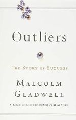

I want to take the Web Programming class to learn the skills required to build a website from start to finish. This class would enable me to break into the tech industry and get closer to my goal of becoming a Software Development Engineer. I hope to apply the skills that I learn in a future job. Web programming is still a new area for me; I currently only have a basic understanding of Python and SQL. I hope to gain more skills by the end of this semester.
Below are a list of my top three favorite foods:My favorite restaurant in the Greater Seattle Area is called Chengdu Memory. Here is a link to the Chengdu Memory Website. I really like this particular restaurant because it brings authentic Sichuan-style hot pot close to where I currently live. Their hot pot has the best flavor among all the hot pot restaurants in the Seattle area. It has a salad bar filled with snacks and fruits that I get to eat for free while waiting for the dishes to be brought to the table. It also has a wide selection of dishes that I can order in smaller portions, allowing me to eat a variety of meats and vegetables in one meal. Despite its location being in an undesirable area, I am still a regular at that restaurant.
My favorite way to eat hot pot is to order two soupbase, one being very spicy and another one would be a bone broth based soup. I will then order thin sliced beef and lamb, some meatballs, and various vegetables on the side. I will cook all the food in the spicy broth and eat them with my customized dipping sauce. I don't typically cook anything in the non spicy side of the hot pot, but rather I will only drink the soup to help tolerate the spicy flavor. I will alway wrap up my hot pot meal with some fruits and ice cream at the end.
| Name | Cover | Author | Summary |
|---|---|---|---|
| Zero to One | |
Peter Thiel, Blake Masters | This book focus on the ideas of how to build an amazing company/idea from scratch. It uses example such as Facebook to help readers understand what it takes to build a great start up. |
| Wanting: The Power of Mimetic Desire in Everyday Life | Luke Burgis | This book focuses on talking about people's desire to mimetic others around us and how role models in our everyday life could influences our behavior. The author believes that human does not know what they want/desire when we were child, but we develop a desire for things as we obser the people that inflences us as we grow up. | |
| Outliers |  | Malcolm Gladwell | This book talks about different factors that contribute to individual's success. It talks about how things such as luck, culture, birth time, and ethnicity could influences a person's possibility be becoming successful in a certain area. |
| Night | Elie Wiesel | The Author is a Holocaust survivor. This book told a tory of his life during the Holocaust. |